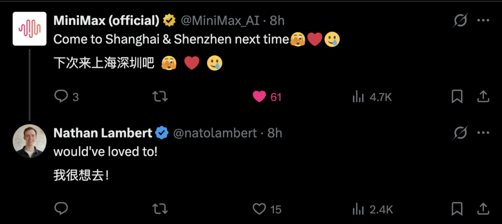
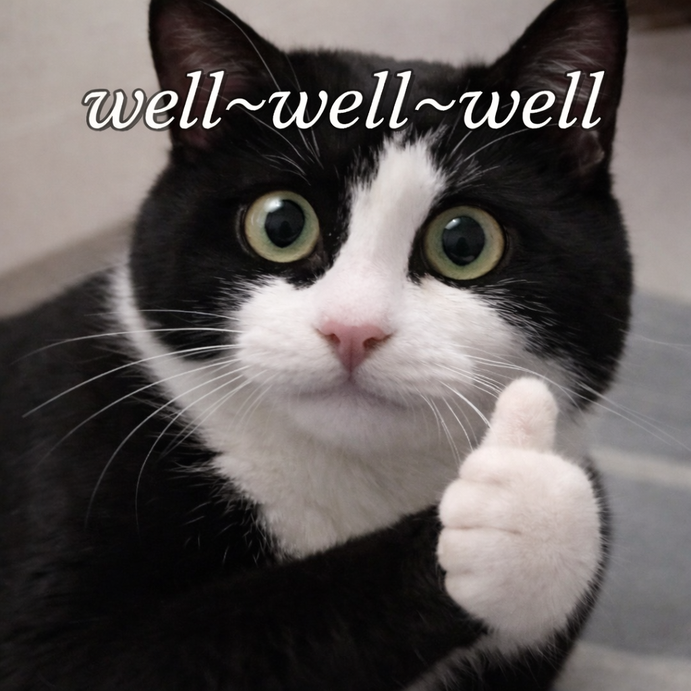

Jay 发自 凹非寺
量子位 | 公众号 QbitAI
中国AI研究员的性格、魅力和真诚……让人倍感亲切。
这是艾伦研究所（Ai2）的研究员Nathan Lambert，在最近结束中国之行后，发自内心的一番感慨。
在Nathan眼里，国内的LLM圈子简直是天堂，大家彼此尊重、即便立场不同也客客气气的。
反观大洋彼岸的御三家，他突然有点没眼看。
天天激情互喷，跟部落争霸似的……
并非场面客套话。
这次来中国的36小时，Nathan几乎把国内AI圈打卡了个遍，月之暗面、智谱、清华、美团、小米、千问……都有深度交流。
在和大量一线AI研究员、学生聊完天后，Nathan得出了这个结论：
这里的AI玩家，在合作共赢。
基于此，Nathan写下长文，分享了他此次中国行期间令他印象深刻的种种事迹——
所有实验室都有点怕字节，所有人都敬佩DeepSeek。
北京简直跟硅谷一样，他36小时内跑了6家AI公司。
他问一名中国研究员对AI风险的看法，对方困惑地愣住了——这似乎是个不合适的问题。
美团、小米这种公司也会自研大模型，这在中国是理所当然的事。
从笔记本上抬起头，总能看到地平线上的起重机，仿佛中国工程师文化的一种具象化。
实在太真诚了，连MiniMax都跑来前排围观，表示希望下次Nathan的「中国行」能把上海和深圳也安排上。

以下是整理后的文章节选。
Enjoy。
中国研究员的心态
Nathan在文中花了大篇幅聊一个事：为什么中国实验室这么擅长追赶前沿？
他的核心判断是，文化。
今天做一个好的LLM，靠的是从数据到架构到RL算法，全栈每个细节的打磨。每个环节都能榨出一些提升，但怎么把这些提升拼到一起，是一个极其复杂的多目标优化问题。
有时候某个天才研究员的工作，需要为模型的整体工作让路。
在美国，这种事经常引爆冲突。
Nathan透露了个瓜：Llama团队据传就是因为内部政治斗争过重而崩盘的。
大家都想让别人按自己的想法做事，有实验室需要花钱安抚顶级研究员，才能让他们别再抱怨自己的想法没被采纳。
据此，他得出一个结论：
过强的Ego和野心，会妨碍做出最好的模型。
而中国这边，他观察到一个微妙差异：
中国实验室的核心贡献者有大量都是在读学生，在这里，学生被当成同事直接参与核心研发。
他们会愿意做那些不那么Sexy的工作，无所谓，只要能让模型变好就行。
反观美国呢？OpenAI、Anthropic、Cursor这些顶级公司干脆就不开实习。
Google这类公司名义上会有和Gemini相关的实习，但事实上，大家会担心实习生会被隔离在边缘区域，接触不到核心工作。
但中国经验证明，学生的参与，反而能大幅加快行进速度。
除此之外，这些学生还带来了一个意想不到的优势：全新的视角。
过去几年LLM的关键范式从Scaling MoE，到Scaling RL，再到Agent，每一次转换都需要疯狂吸收新的上下文。
学生恰恰最擅长这个。他们擅长快速学习，也乐于放下一切预设，一头扎进去。
Nathan还注意到一件有意思的事。当他问中国研究员对AI的经济影响或长远社会风险有什么看法时，很多人的反应是——
愣了一下。
不是不想回答，是真的觉得不关他们事。他们的任务就是做出最好的模型，其他的事，不是他们操心的范围。
相比之下，美国文化更强调为自己发声。
作为科学家，你越能为自己的工作发声，就越容易成功。
而硅谷文化也在推动一种新的成名路径，也就是成为明星AI科学家。所以大家乐忠于上Dwarkesh、Lex Fridman这种超级播客节目。
一位研究员引用了Dan Wang那个经典说法，很精辟：中国是工程师治国，美国是律师治国。
工程师考虑的是解决问题，而律师考虑的，是定义问题。

概括一下，Nathan觉得有四点比较重要的文化差异：
1、更愿意做那些不那么光鲜，但能提升最终模型的工作。
2、刚进入AI构建领域的人，不受上一轮AI炒作周期的路径依赖束缚，因此能更快适应新的现代技术。
3、更少的自我意识，让组织结构能稍微更好地扩张，因为更少有人试图钻组织系统的空子。
4、大量人才非常适合解决那些已经在别处有概念验证的问题。
北京=硅谷
Nathan的北京游挺有意思。
他说北京简直像湾区。随便走两步就是一个竞争对手的办公室。
他下了飞机，去酒店的路上顺便就拐进了阿里巴巴北京园区。然后在36个小时内，他依次去了智谱、月之暗面、清华、美团、小米、零一万物。
线下交流中，他向研究员们八卦中国的人才争夺情况怎么样。回答是：
跟美国差不多。
跳槽很正常，主要看当前哪个团队氛围最好。
但有一点跟美国很不一样。
在中国的AI圈，实验室之间更像是一个生态，而不是互相厮杀的部落。在很多私下交流中，大家对同行都是尊重的。
所有实验室都对字节跳动和豆包保持高度关注，在Nathan看来，字节是中国少数走闭源路线推进的大模型玩家。
所有人都敬佩DeepSeek，认为它是研究品味最好的实验室。
这让Nathan很惊讶，和美国研究员的线下对话，火药味可比这浓多了。
但在中国，大家似乎冥冥中形成了一种默契的共识。
还有一点他觉得很奇怪——
中国研究员谈到商业化的时候经常耸耸肩，说：那不是我的事。
而美国这边，从数据供应商到算力到融资，人人都对各种生态级别的产业趋势如数家珍。
中国AI产业的真实样貌
聊完文化，Nathan接着聊了聊产业层面他观察到的几个关键差异。我挑几个最有意思的说。
1、国内AI需求的早期信号
一直有一种说法：中国AI市场会比较小，因为中国公司不太愿意为软件付费。Nathan认为这个判断只对了一半。不愿意花钱的部分对应的是SaaS生态，这在中国确实很小。但中国有一个庞大的云计算市场。
关键问题在于：企业在AI上的花费，最终会走SaaS的路线还是云的路线？
Nathan的感受是，AI更接近云，而且没有人在担心围绕新工具是否能长出市场。
2、中国公司的技术自研执念
为什么美团、蚂蚁集团这种公司也在自己做大模型？
西方人可能会觉得奇怪。
但在Nathan看来，中国人的逻辑是：LLM显然会成为未来科技产品的核心，所以必须自己掌握。
不过，虽然自研，但也开源。
先训一个通用底座，开源出去让社区帮忙打磨，内部再微调一个版本用到自己的产品里。
开源不是信仰，是实用主义——它能获得社区反馈，能回馈开源生态，也能帮助他们更好地理解自己的模型。
3、算力不足
英伟达仍是训练的黄金标准，每个实验室都因为芯片不够而受限。
4、数据产业不够成熟
Nathan听说过Anthropic和OpenAI动辄花1000万美元以上买单个RL训练环境，每年累计花费数亿美元来推动前沿。
他很好奇，中国实验室是不是也在从美国公司买这些环境？或者有镜像的国内供应链？
答案是：有数据产业，但质量参差不齐。
所以自己做更靠谱。一般来说研究员们会亲自花大量时间搭RL训练环境，字节和阿里这种大公司则有内部数据标注团队。
尾声
Nathan文章最后的一段话，关乎「了解」。
Nathan表示，来之前就知道自己对中国了解甚少，走了一圈之后反而更强烈地感受到，自己根本不了解这块土地。
中国不是一个能用规则或公式来概括的地方，它有完全不同的动力学和化学反应。
如此古老且深厚文化，却又与当下的技术建设完全交织在一起。
在Nathan跟几乎所有中国领先AI实验室交谈后，他发现中国有很多特质和直觉，是很难用西方的决策框架去建模的。
他不明白，为什么这些实验室要开源自己好不容易训练出来的模型。
它们不会认为自己构建的每一个模型都必须开源，但都非常有意愿支持开发者、支持生态，并且把开源进一步了解模型的一种方式。
这些公司构建LLM，并不是因为追逐热点，想在新潮技术里刷存在感。
这一切的背后，是一种Nathan没有想过强烈的深层愿望：
把技术栈掌控在自己手中。
这也让Nathan在文章结尾，直言自己有些许焦虑：
如果说我不希望美国实验室在AI的每个领域都保持明确领先——特别是在开源模型这块——那我就是在骗人。
我是美国人，这是一个诚实的偏好。
我希望开源生态能在全球繁荣。这能为世界创造更安全、更可及、更有用的AI。
但现在的问题是，硅谷是否能保住这个领导地位？
归根结底，依旧是在谈中国开源文化这件事。
关于这一点，Nathan说了一句非常有画面感的话，很适合用作结尾：
当我从笔记本电脑上抬起头，总能看到地平线上的一簇簇起重机。
这跟中国的开源精神，显然是一脉相承的。
Nathan报告原文： https://www.interconnects.ai/p/notes-from-inside-chinas-ai-labs
一键三连「点赞」「转发」「小心心」
欢迎在评论区留下你的想法！
— 完 —
5月20日，我们将在北京金茂万丽酒店举办一年一度的中国AIGC产业峰会。
首波嘉宾阵容已公布！昆仑万维方汉、智谱吴玮杰、EverMind邓亚峰、风行在线易正朝、百度秒哒朱广翔、Fusion Fund张璐、香港大学黄超、MarsWave冯雷都来了，🔍了解详情
请你和我们一起，不再只是讨论AI的未来，而是现在就用起来。👉 报名参会
一键关注 👇 点亮星标